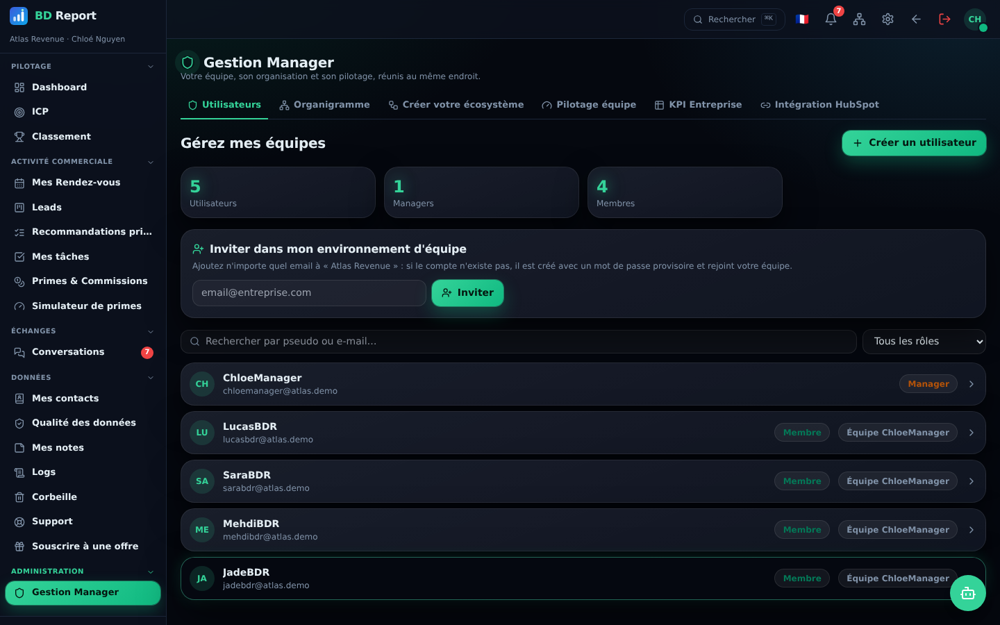
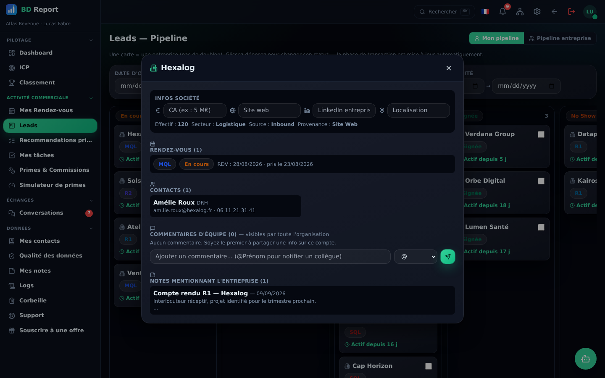

Une vraie messagerie d'équipe
Canaux de discussion, messages directs 1:1, réactions, réponses, épingles, images et fichiers. Cherchez un collègue, ouvrez sa fiche et démarrez la conversation.
Le reporting qui se poste tout seul
Créez un canal de reporting : BD Report publie chaque RDV, avancement de deal, client gagné ou perdu — vous choisissez les événements et les infos affichées.
Qui travaille quoi, visible
Le pipeline entreprise agrège les comptes de toute l'organisation avec leur propriétaire — les conflits se voient avant de se produire.
Des conversations qui restent
Les commentaires vivent sur la fiche du compte, pas dans un chat qui défile. Mentionnez @Sarah : elle est notifiée dans son espace.
Le manager outillé
Forecast avec projection de fin de mois, daily standup en 30 secondes, alertes de dérive automatiques et réassignation tracée.



Tout ce que cette brique inclut
- Messagerie : canaux & messages directs 1:1
- Réactions, réponses, transferts, épingles
- Images & fichiers dans les conversations
- Reporting automatique configurable
- Présence : en ligne / hors ligne / ne pas déranger
- Services d'organigramme & accès sectorisé
- Pipeline entreprise partagé, statuts modifiables
- Commentaires & @mentions avec notifications
- Pilotage équipe : forecast, standup, alertes
- Réassignation de leads tracée
- Organigramme hiérarchique
- Rôles et permissions par briques